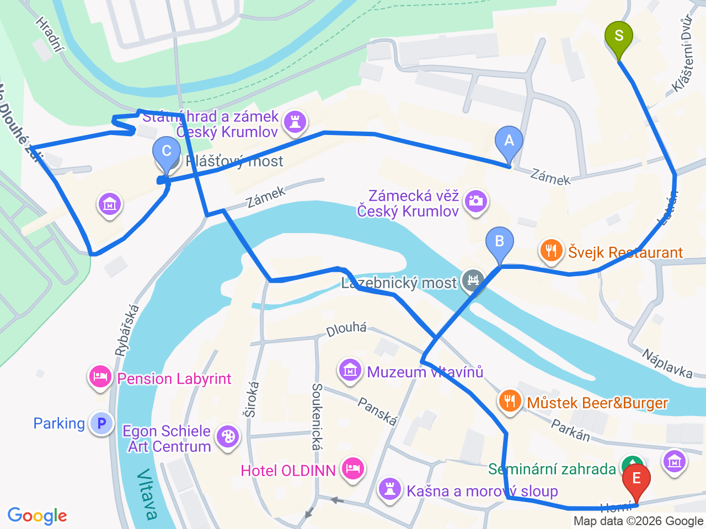

Day 28 · 2026-09-12（六）
捷克・布拉格/CK小鎮 Day 5/5
CK小鎮全日：國家城堡與莊園、城堡塔、斗篷橋
深入UNESCO城堡園區，登城堡塔俯瞰山城全景，走過三層式斗篷橋，塞米納花園眺望夕陽山城
💱捷克幣匯率參考（查詢當日）：1 CZK ≈ 0.041 EUR（約 100 CZK ≈ 4.1 EUR）；1 CZK ≈ 1.52 TWD（約 100 CZK ≈ 152 TWD）。實際匯率會隨市場波動，僅供參考，換匯/刷卡以當下實際匯率為準
⏰城堡博物館＋城堡塔9-10月開放09:00-16:30（週五、六部分區域延長至19:00）；國家城堡與莊園本體的定時導覽（Route I／Route II）英語場次有限，且多在週一公休——9/12是週六不受影響，但仍建議提前上官網 zamek-ceskykrumlov.cz 查詢當週英語導覽時段，或一開門就去第二庭院售票口確認，旺季常需排隊

固定時間行程DAY 28
| 時間 | 地點 | 地點 (英文) | 交通方式／班次 | 價格 | 預計停留(分鐘) | 備註 |
|---|---|---|---|---|---|---|
| 09:00 | 城堡博物館＋城堡塔套票入場 | 1Zámecká věž, Český Krumlov, Czech Republic | 步行至第二庭院售票口 | 套票約280 CZK | 60 | 建議開門就到、人潮較少；套票含常設展與登塔，塔頂可俯瞰整個山城 |
| 10:15 | 國家城堡與莊園導覽（Route I 或 II 擇一） | 2Státní hrad a zámek Český Krumlov, Czech Republic | 定時英語導覽，場次有限 | Route I 約300 CZK／Route II 約260 CZK | 60 | 選 Route II 會直接走到斗篷橋內部迴廊；建議事先查詢/預約當天英語場次 |
| 11:30 | 斗篷橋（Plášťový most） | 3Plášťový most, Český Krumlov, Czech Republic | 步行 | 免費（上層通道對外開放） | 20 | 三層式跨越深谷的橋樑，經典打卡點；若上午選了Route II，這裡等於已走過內部迴廊 |
| 12:00 | 塞米納花園（Seminární zahrada） | 4Seminární zahrada, Český Krumlov, Czech Republic | 步行約5分鐘 | 免費 | 30 | 城堡園區最深處的巴洛克花園，居高臨下眺望紅屋頂山城與河灣，適合拍照 |
| 12:30 | 午餐：Depo Pub and Restaurant | 步行約10分鐘 | 見上方三餐資訊 | 從城堡園區走回 Latrán 街，順路 |
彈性探索景點DAY 28
| 地點 | 地點 (英文) | 預計停留(分鐘) | 價格 | 備註 |
|---|---|---|---|---|
| 伏爾塔瓦河泛舟／木筏（選項） | AVltava, Český Krumlov, Czech Republic | 約90-120分鐘 | 約 CZK 300-600／人 | 9月中通常還有船家營運，需跟業者（如Maleček）事先預約，體力/天氣許可再排 |
| Egon Schiele Art Centrum（選項） | BEgon Schiele Art Centrum, Český Krumlov, Czech Republic | 約60-90分鐘 | 約 CZK 200 | 席勒相關現代藝術中心，出發前確認當週開放時間 |
| 舊城區小店與紀念品街 | CNáměstí Svornosti, Český Krumlov, Czech Republic | 約60分鐘 | 免費（購物另計） | 昨天已逛過廣場一帶，今天可以純逛店、買紀念品，步調放輕鬆 |
| 晚餐：舊城區自由選擇 | 見上方三餐資訊 |
每日三餐
早餐
飯店早餐Latran House 71 by KH
午餐
Depo Pub and RestaurantDepo Pub and Restaurant約 CZK 250-400／人
📍 Latrán 75, Český Krumlov, Czech Republic河畔氣氛餐酒館，燒烤類為主，就在城堡入口附近，逛完城堡園區順路
晚餐
舊城區餐廳（自由選擇）約 CZK 250-450／人
備案：Laibon（河畔景觀座位，素食友善）、Cikánská pec（廣場旁烤肉串，輕鬆快速）、Nonna Gina（義式，口碑不錯）
住宿資訊